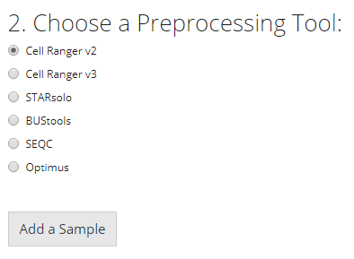
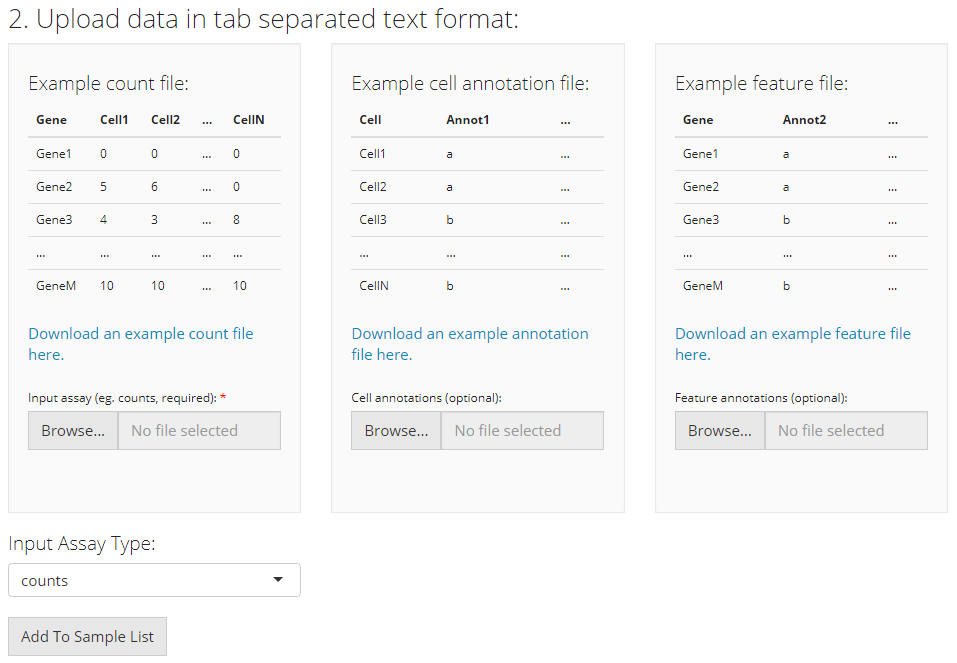
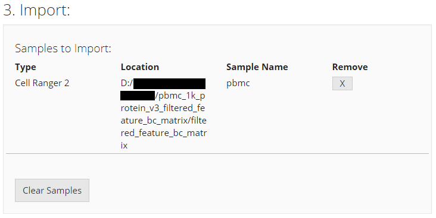

Introduction
This page is the landing page of the Single Cell ToolKit (SCTK) application. Here SCTK allows users to import multiple datasets at once, and the datasets can be in various forms, including the output from preprocessing tools (listed later), the text files of count matrices and annotations, the RDS file saving a SingleCellExperiment object or the example dataset ready online.
The UI contains mainly three sections for importing and another section for data summary. Through the first and the second sections, users can choose the type of a single data source and specify the location of the data from this single source, respectively. A table in the third section summarizes files and samples that are specified from all sources. Finally, all data can be imported by clicking on the import button right below this table.

Importing Single-Cell Datasets

For a single source of data, users need to choose one option from the radio buttons listed in the screenshot. The next step will depend on the option chosen.
Import from a preprocessing tool

SCTK supports importing data from the following pre-processing tools in our UI workflow:
- CellRanger (versions 2 and 3)
- STARSolo
- BUStools
- Seqc
- Optimus
Choose the specific preprocessing tool that matches your dataset, and then press “Add a Sample”. A corresponding dialog modal will pop out with description that instructs you to select the directory that stores your data.
Cell Ranger
The import procedure for Cell Ranger versions 2 and 3 are the same. To import a Cell Ranger sample, the user must select how they would like to import the sample: select a base directory that holds multiple sample directories, select a single sample directory, or select a directory holding the data files for a sample. Depending on this selection, the user must then provide the apprpriate directory paths and sample names and then click “OK.”

STARsolo
To import a STARsolo sample, the user must select the parent directory of the "Gene/" directory for the sample they want to import, name the sample, and click “OK.”

BUStools
To import a BUStools sample, the user must point to the "genecount/" directory for the sample they want to import, name the sample, and click “OK.”

SEQC
To import a SEQC sample, the user must point to the directory that contains the barcodes, gene, and matrix files for the sample they want to import and name the sample. This tool additionally needs the user to specify a “Sample ID” which is what the name of the sample is as it appears in the names of its data files (e.g. for a file called "pbmc_1k_sparse_counts_barcodes.csv" the sample ID is "pbmc_1k"). Then the user must click “OK.”

Optimus
To import an Optimus sample, the user must select the directory that contains the following four directories for the sample they want to import: "call-MergeCountFiles", "call-MergeCellMetrics", "call-MergeGeneMetrics", "call-RunEmptyDrops". Then the user must prove a sample name and click “OK.”

Import from flat files (CSV, TSV)
To import tab-separated data, the user must provide a counts file (.csv or .tsv) and specify what type of input assay it is. The user can optionally also provide cell annotation and feature files (also .csv or .tsv). The user must then click “Add to Sample List” to add it to the table of samples.
After choosing a single file for uploading, user must wait until the progress bar runs to the right end and says “Upload complete”. Sometimes the progress bar runs to the end but it takes some time for the system to finalize reading a large file.

Upload SingleCellExperiment or Seurat object stored in an RDS file
RDS is a file format that stores a single object from R environment. To import a single-cell dataset stored in a SingleCellExperiment (SCE) object from an RDS file, the user can simply select which RDS file to import and click “Add to Sample List”.
After choosing a single file for uploading, user must wait until the progress bar runs to the right end and says “Upload complete”. Sometimes the progress bar runs to the end but it takes some time for the system to finalize reading a large file.

Import example datasets
Users can also opt to import and work with published example datasets. To do so, the user must select which dataset they would like to use from the dropdown menu and click “Add to Sample List”. For more information about the chosen dataset, users can click on the hyperlink of the title and open the reference website in a browser.

Complete Upload
After successfully choosing each source of dataset, it will be inserted to a new line of the table at the buttom of this UI page, in “3. Import” section. This is a wait-list for all the samples of interests. To finally import all datasets of interests, users must click on “Import” button.
Before importing, users can click on the “[X]” button on the right to remove the selection of the corresponding single dataset, or click on “Clear Samples” to reset all selections. This only clears this wait-list for importing, but will not work on any dataset already imported.
Note that it is normal that in the “Location” field, some paths might happen to point to a temporary cache.

Importing Gene Sets

Users can import gene sets to use in later steps of the toolkit’s pipeline. The UIs are implemented in the page that can be entered through the links, as shown in the screenshot above.
There are three ways to import gene sets, and they are described below.
Import Gene Sets from a GMT File
The first option is to upload the GMT file detailing a gene set. For this option, users must provide a GMT file through the file input “Choose GMT File”; a text collection name at “Collection Name”. If the collection name entered already exists in current session, the gene set from the GMT file will be added to that collection. Otherwise, a new collection with the given name will be created. Finally, users must click “Upload” to finish the procedure.

Select from a Database
SCTK also has a database of gene sets that users can choose from. For this option, the user must simply select the gene sets they would like to upload and click “Upload”. A brief description of each gene set is provided in the checklist.

Paste in Gene Sets
Users also have the option to paste their gene set into a text box. In order to do so, the user must paste their gene set into the provided text box and then provide a collection name to create a new collection. If there are already gene sets imported, the user can choose an existing collection to add their pasted gene set into. Then the user must click “Upload.”

Map Gene Sets to Specific Feature IDs
There is an additional selection input labeled with “Location within SCE object where the gene identifiers in should be mapped”, placed above the “Upload” button as already shown in screenshots above. This specifies the feature IDs stored in the imported single-cell dataset, to which the gene identifiers in the uploaded gene sets will be mapped. For example, if the uploaded gene sets are presented by gene symbols, users must make sure the selection here is pointing to gene symbols instead of ENSEMBL IDs. Most of the time, “rownames” is the default feature ID of the imported single-cell dataset.